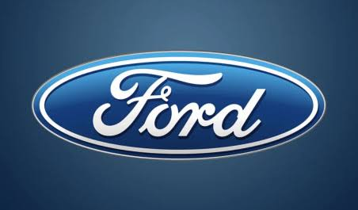

A Ford Motor Company é uma das fabricantes de automóveis mais tradicionais do mundo, fundada por Henry Ford em 1903. Atualmente, a marca passa por uma grande reestruturação global focada em tecnologia, veículos comerciais e modelos eletrificados.
Desde que encerrou a sua produção nacional em 2021, a Ford mudou sua estratégia no mercado brasileiro, operando estritamente como importadora de veículos premium, SUVs e picapes:
Globalmente, a Ford reorganizou suas divisões internas na iniciativa Ford+, criando uma nova estrutura de Criação e Industrialização de Produtos para acelerar o desenvolvimento de softwares e a sua plataforma de Veículos Elétricos Universais (UEV). Apesar dos custos de reestruturação do setor elétrico que impactaram os balanços passados, a empresa apresentou resultados financeiros sólidos no início de 2026, impulsionada principalmente pela divisão de frotas e comerciais, a Ford Pro.
A companhia opera globalmente dividida em três frentes principais de negócios (Ford+): Ford Blue (veículos a combustão e híbridos), Ford Model e (veículos elétricos) e Ford Pro (veículos comerciais e frotas).
Sede Mundial - Dearborn, Michigan, Estados Unidos.
Presidente e CEO Global - Jim Farley.
Presença de Mercado - Líder incontestável do segmento de picapes e veículos comerciais nos Estados Unidos e forte presença em comerciais na Europa.
Estratégia Tecnológica - Investimento massivo na plataforma de veículos elétricos universais (UEV), além de atualizações remotas de software (Over-the-Air) e direção autônoma com o sistema BlueCruise.
Centro de Desenvolvimento de Tecnologia - Apesar do fim das fábricas no Brasil, a Ford mantém um Centro de Desenvolvimento de Engenharia na Bahia, que exporta projetos e softwares automotivos para filiais do mundo inteiro.